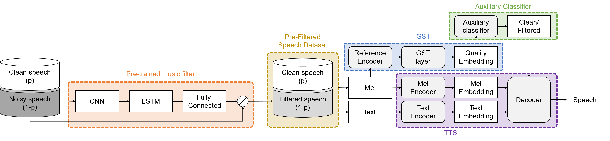

Abstract: A personalized text-to-speech (TTS) system requires several hours of high-quality personal speech data from a speaker. In real scenarios, collecting hours of voice recordings of a specific speaker is very expensive, and only a few minutes of data are often available. Recently, it has become easier to obtain speech data from personal social broadcasting. However, it remains difficult to utilize them as training data for TTS systems, as they include various noise such as background music. A global style token (GST) based TTS model can generate high quality speech from speech data mixed with music and noise, but it requires a sufficient amount of data to attain reliable performance. Therefore, in this paper, we propose a method to train the GST-based TTS system with an insufficient amount of specific speaker data containing different music noise. We apply two tasks: first, we separate music from noisy speech data by using a pre-trained music filter; second, we use an auxiliary classifier to make the audio quality clean. We demonstrate that the proposed method can synthesize high-quality speech with less mispronunciation through speech recognition and listening tests.
Proposed System Architecture:

| Model | TTS | GST | GST+MF | GST+MF+Aux. | GST+MF+Aux. | GST+MF+Aux. |
| (Clean/Noisy) | (5h/0h) | (2.5h/2.5h) | (2.5h/2.5h) | (0.5h/4.5h) | (1.5h/3.5h) | (2.5h/2.5h) |
| Sample 1 | ||||||
| Sample 2 | ||||||
| Sample 3 |